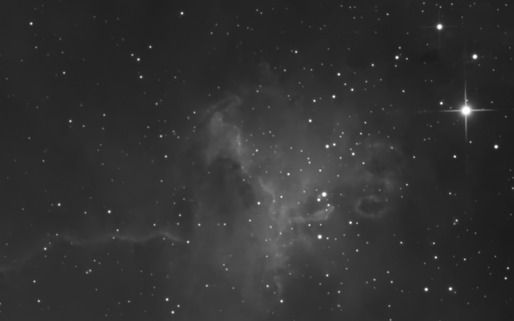

NeuroNoise
Oma kohinanpoistoneuroverkko, opetettu omilla kuvillani.
My own denoising neural network, trained on my own images.
Testissä · mono v5 · väri v3
NeuroNoise on oma neuroverkkoni astrokuvien kohinanpoistoon. Opetusdata on kokonaan omaa: samasta kohteesta kootaan satunnaisia lyhyitä pinoja (1–32 subia), ja oikeaksi vastaukseksi annetaan saman kohteen pitkä master. Verkko oppii, miltä juuri minun kamerani, rekisteröintini ja pinoamiseni kohina näyttää, ja erottaa sen signaalista.
Miksi oma neuroverkko?
Kaupalliset kohinanpoistajat ovat hyviä, mutta ne on opetettu muiden datalla. Halusin nähdä, mihin päästään, kun opetus tehdään omalla kalustolla ja omilla kohteilla – ja ymmärtää jokaisen vaiheen itse.
Verkko on pieni (0,9 miljoonaa parametria). Se opetetaan tavallisella näytönohjaimella alle tunnissa, ja valmis malli käsittelee useimmat kuvat alle minuutissa.
Mitä matkalla opittiin
Neuroverkko oppii täsmälleen sen, mitä data sille opettaa. Värikameramallin ensimmäiset versiot tekivät taustaan tummia läiskiä ja tumman reunuksen. Syy löytyi opetuspareista: pinojen kontrasti erosi masterista jopa 30 %, ja verkko oli oppinut "korjaamaan" eron.
Kun parit korjattiin ja jokainen pari tarkistetaan ennen opetusta, läiskät katosivat. Mukana on nyt oma mittaustyökalu, joka näyttää jäljelle jäävän kohinan lisäksi myös läiskät ja halot.
NeuroNoise is my own neural network for denoising astrophotos. All the training data is my own: random short stacks (1–32 subframes) of a target are the input, and the long master of the same target is the right answer. The network learns what the noise of my own cameras, registration and stacking looks like, and separates it from the signal.
Why my own network?
Commercial denoisers are good, but they are trained on other people's data. I wanted to see how far it goes when the training is done with my own equipment and targets – and to understand every step myself.
The network is small (0.9 million parameters). It trains on an ordinary graphics card in under an hour, and the finished model processes most images in under a minute.
What I learned along the way
A neural network learns exactly what the data teaches it. The first versions of the colour camera model left dark blotches and a dark frame in the background. The cause was in the training pairs: the contrast of the stacks differed from the master by up to 30 %, and the network had learned to "correct" it.
Once the pairs were fixed and every pair is checked before training, the blotches disappeared. It now has its own measuring tool that shows not only the remaining noise but also blotches and halos.
Ennen ja jälkeen
Ha-kuva, rajaus 1:1 ja sama venytys molemmille. Vedä viivaa: vasemmalla alkuperäinen, oikealla NeuroNoise (mono-malli v5). Molemmille on ajettu BlurXTerminator samoin.
Ha image, 1:1 crop with the same stretch for both. Drag the line: the original on the left, NeuroNoise (mono model v5) on the right. BlurXTerminator was run on both in the same way.

Alkuperäinen NeuroNoiseKohina pieneni noin 8,5-kertaisesti, ja himmeät Ha-filamentit näkyvät nyt selvästi taustaa vasten.
The noise dropped about 8.5-fold, and the faint Ha filaments now stand out clearly against the background.
Tila
NeuroNoise on testissä omassa käytössäni, eikä sitä jaeta toistaiseksi. Myöhemmin se tulee osaksi Noise Prota PixInsightiin.
NeuroNoise is in testing for my own use and is not shared for now. Later it will become part of Noise Pro in PixInsight.